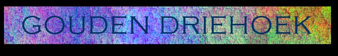

| Terug naar welkomstpagina! |

De Gouden Driehoek, Wippolder.
logo Gouden Driehoek | De Gouden Driehoek bestaat uit de huizen
OHIOH!, De Buren/Triple Mistig en natuurlijk Kromme Heut, alle drie gelegen in de Wippolder (tussen Delfgauwseweg, Kon.Emmalaan en Schoemakerstraat). Alle drie huizen vormen een punt c.q. basis in de Driehoek die in de toekomst door woningcorporatie Vestia gesloopt en gerenoveerd gaat worden. Hierbij zullen de huizen De Buren/Triple Mistig en OHIOH! gesloopt worden in resp. 1998 en 2003. De Kromme Heut zal verlaten worden. Onlangs heeft Hans de Kromme Heut reeds verlaten, in de herfst volgen WIlmar en Gerben.
De Gouden Driehoek is opgericht vanwege drie punten (dit is dubbelzinnig): |
Bovenste tekening: oranje zijn gestapelde woningen, blauw is laagbouw en groen zijn scholen en een kerk.
Onderste tekening: rood wordt gesloopt begin 1998, paars wordt gerenoveerd, geel wordt gesloopt in 2003, oranje blijft staan.
Nog even een kaart met alle sloop- en renovatiegebieden. Ook hier weer: rood wordt gesloopt begin 1998; paars wordt gerenoveerd. Geel wordt gesloopt in 2003. Oranje blijft uiteraard bestaan.
| Terug naar welkomstpagina! | vervaardigd 30-08-97 door Kromme Heut |